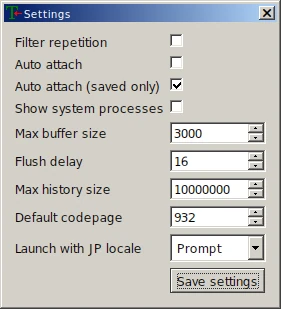

在虚空中与 amitié 相遇。下篇
FLOWERS 三重唱 - 名塚佳織, 岡本理絵, 明島ゆうり on Soundcloud
你在读到本文时 FLOWERS 冬篇的官方汉化版可能已经出了，但 noarch 在 2022 年初就啃完冬篇生肉了。完全不会日语的 noarch 是怎么做到的呢...
很抱歉这篇文章从年初一直咕到现在才写完，希望下面的操作能为你看其它生肉 gal 提供一些参考。
Textractor 简介
这次探索生肉 gal 自动翻译的旅程着实让 noarch 敬佩阿宅们为了能玩上游戏做出的努力。
noarch 在中文圈搜了一圈，发现教程最多的是“Visual Novel Reader”，而进一步调查 noarch 发现这个软件处于一个被社区疯狂魔改的状态，原开发者疑似已经跑路了。
看到这，noarch 想着，总有比这更优雅的解决方案吧；于是我在 GitHub 找到了 Textractor。它设计看起来明显比上述的 VNR 看起来简单，并且是 GPL 协议的自由软件。
从用户角度来看，Textractor 做的事情非常简单：从游戏内提取文本，将文本送入插件管线做翻译等处理，并将处理后的文本输出。
下面我们开始吧。别被吓到，本文简短的长度就是 Textractor 易用性的最好证明。
安装
Textractor 发布在 GitHub 上，能开始读本文的你应该也熟悉反直觉的 GitHub 下载二进制 Releases 的方法了。
Textractor 作者在 Releases 里提供了两种安装方式，exe 和 zip，而其实 exe 安装器做的只是将 Textractor 解压到目标位置然后安装作者改的 Arial Unicode MS 字体。
如果你选择 exe，请注意选择 "Install for all users" 即“全局”安装。这样能保证字体被安装到 %WINDIR%/Fonts 而不是用户的字体文件夹。
如果你选择了 zip，请在解压后自行按照前面的方法安装附带的字体。当然，你也可以自己安装和使用别的字体。
排错
安装过程一切顺利，但 noarch 在打开 Textractor 本体之后整个人都不好了：sway 将它的多个悬浮窗口全部水平排列，非常喜感；而且 Textractor 的翻译悬浮窗无法移动。
最生草的是，在 Wine 7.4 之后默认启用的 "Light" 主题下，Textractor UI 元素崩坏。好在 wine winecfg -> “桌面集成” -> “（无主题）” 即可恢复正常，不过你就要忍受一下 Windows 经典样式了。
如果你遇到了窗口管理问题，你还需要在 winecfg -> “显示”里面打开一个大小合适的“虚拟桌面”。这样，窗口管理器就不会影响任何在这个 WINEPREFIX 里运行的程序窗口。

按照上面的步骤修正之后：

不过... noarch 后来发现，可能是因为虚拟桌面里没有混成，Textractor 翻译悬浮窗无法置顶。如果你遇到了这个问题，解决方案可能只有换回 X11 并禁用 Wine 虚拟桌面。noarch 确认在 X 下面没有这个问题，并且窗口管理器也可以将悬浮窗置顶。如果你用的是 i3 之类的平铺式窗口管理器，你可能需要手动悬浮一些窗口。
启动/勾住游戏
Textractor 分为两个独立版本，x86 和 x64，分别对应 32 位和 64 位 x86 程序。FLOWERS 是 32 位的，所以我们选择 x86。
有了 Textractor 后，你可以在 Textractor 里面启动（Launch）冬篇，也可以启动完游戏再加载（Attach）Textractor。这样，Textractor 就勾（Hook）住了游戏。

即使你熟悉 VNR 或其他翻译姬，也大可不必马上开始找钩子，FLOWERS 可以被 Textractor 自动勾住，开箱即用。
"Launch game":

Wine 从来不是一个沙盒；别忘了你可以在
Z:盘访问整个 Unix 文件系统。
Textractor 会记住你以前启动的程序。下一次你就不用手动选择文件了。
因为 Textractor 集成了 Locale Emulator，接下来它会问你要不要模拟日语编码。FLOWERS 所有版本都使用 Unicode，因此不需要模拟。

选择钩子
启动冬篇之后点开始。真由理和文字框出现之后，展开 Textractor 的钩子列表。

翻过这些钩子，你会发现绝大多数内容都是垃圾。
以 FLOWERS 冬篇为例，正确的文字钩子是 GetGlyphOutlineW@6c9eb090（如果你的 FLOWERS 游戏程序跟 noarch 不同，内存地址可能不同，但函数都是 GetGlyphOutlineW），因此你需要在“Remove hook(s)”里面双击删掉除了它之外的所有钩子。

关于文字滚动和延迟
很多视觉小说都有文字滚动出现的效果，FLOWERS 也不例外。然而，这个效果会影响 Textractor 的文字提取，所以你需要把这个效果尽可能关掉：在 FLOWERS 游戏设置里把“message speed”调到最大即可。
虽然抓帧看它并没有完全禁用文字滚动，但接下来 noarch 告诉你为啥这不成问题。
提升文字滚动速度之后，我们可以通过减少文本输入等待时间来提升 Textractor 的响应速度，即 Textractor 收到第一个字 -> 将文本送入插件管线的延迟。
之所以需要这个延迟，是因为在游戏的文字滚动下，文本框里的文本并不是一次性就输出到屏幕上的。因此，Textractor 会分次收到文本，它必须等待一段时间，等文本框的文字输出完，才能送进管线。如果这个延迟太短，则会使文本没提取完就被翻译；太长则会增加翻译延迟，影响使用体验。
总而言之，在“禁用”文字滚动之后你可以在 Textractor 主窗口 -> "Settings" 里调低默认 500 毫秒的“Flush delay”。noarch 在这里给了它一帧 (60 fps, ~16 ms) 的等待时间，并在测试中发现长段文本也不会有分开的问题。

配置插件管线
接下来我们要进入 Textractor 的核心：插件/扩展系统。
根据 Textractor 作者的说法，Textractor 本身只是一个文字提取工具。让 Textractor 能翻译视觉小说的，是和它一起发布和编写的种种插件。插件的输入和输出都是文本，而且 Textractor 的插件管线把多个插件串联在一起，形成最终的翻译结果。
FLOWERS 算是一个比较安分的游戏，我们不需要特意去重或过滤。因此，noarch 用的插件管线很简单：
插件的作用也显而易见：
- Google Translate 将抓取的日文翻译
- Extra Window 不对管线里的文本做任何更改，只是将原文和翻译后的文本显示在一个悬浮窗里，可以置顶并叠在游戏文本框之上。
- Extra Newlines 在 Textractor 主窗口的日志里换行分开每一次翻译请求
如果你更喜欢 DeepL，可以删除 Google Translate 插件然后右键添加 DeepL 插件替代：
你应该还记得前面提到的，这个插件列表是一个管线，一个插件的输入是上一个插件的输出吧。因此 DeepL Translate 跟 Google Translate 一样应该放在插件列表的最顶端。

noarch 的个人体验证明，DeepL 的日译英结果相比 Google Translate 相对更通顺（准确度未知），但如果你要用 DeepL 你需要注册一个 DeepL API 帐号，并将 API 密钥填入 API key 一栏，否则插件会默认使用测试 API Key，而它的限流严格到根本没法用。
添加词典
机翻在整个游戏间总会出现翻译错误。如如果你想学日语，或者只是验证翻译的正确性，可以使用 Textractor 悬浮窗插件提供的一个实用功能：把鼠标悬浮在原文即可显示词典。
限于版权，体积问题以及用户语言繁多，Textractor 并没有内置词典，你需要自己下载或转换词典，不过作者为英语使用者提供了转换好的 JMDict 下载。
下载完后将压缩包里唯一一个文件解压到 Textractor 安装目录，然后在悬浮窗右键打开“Dictionary” 即可。
noarch 没有自定义词典的需求，但如果你要自定义词典，你可以用上面链接里提供的脚本将 FreeDict 或 JMDict 格式的词典转换成 Textractor 的词典格式并用相同的方法丢进 Textractor。
最终效果
最后 noarch 放个朴素但“just works”的效果图：

遗留问题和总结
作为总结，noarch 依然要列出我遇到并且没有完全解决的问题：
- Google 和 DeepL 对游戏里人名的翻译都很玄学，正确翻译的例子不到一半，DeepL API 的“词汇表”功能也没有支持日译英的打算。这个问题你可以用 Regex Replacer 部分解决，思路是穷举所有可能的错误翻译结果并替换成正确的人名，用法可以在 Textractor 文档里查看。但这个方法也不是万能的，总有你不能替换到的例子。
- 出现选择支时选项文本会全部糊在一起，没有换行，并造成翻译结果错误。因此解谜部分还得麻烦你自动复制翻译了。
- 过场动画，尤其是游戏结尾和真由理重逢的表演完全没有翻译，可能是屏幕上的文本都以图片形式存储和显示吧... 这一点挺烦并且会打破沉浸感。变通的解法则是在过场动画放完之后打开里面有过场动画文本的 log，然后 Textractor 会翻译日志页面的文本。
这些问题其实 noarch 从一开始就预料到了，是机翻和文字提取不可避免的麻烦。不过如果你抱着学日语的态度或对故事的痴迷玩生肉 Gal，略低的翻译质量和小麻烦估计也不会劝退你吧。毕竟这就是为什么 Textractor 存在嘛。
到这里，分成两部分姗姗来迟的 Wine FLOWERS 旅程就结束了。对于一些读者，这两篇文章可能信息量极大，涉及到了 multilib，Wine 运行库替换，字体配置，文字编码，Wayland 和 X 等深度使用 GNU/Linux 一段时间才会掌握的知识点。如果你还对这些知识点一知半解，Arch Wiki 永远是你最好的 葵花宝典；上述内容在 Arch Wiki 都有详细描述，并请将本文作为你对这些概念的引导吧。